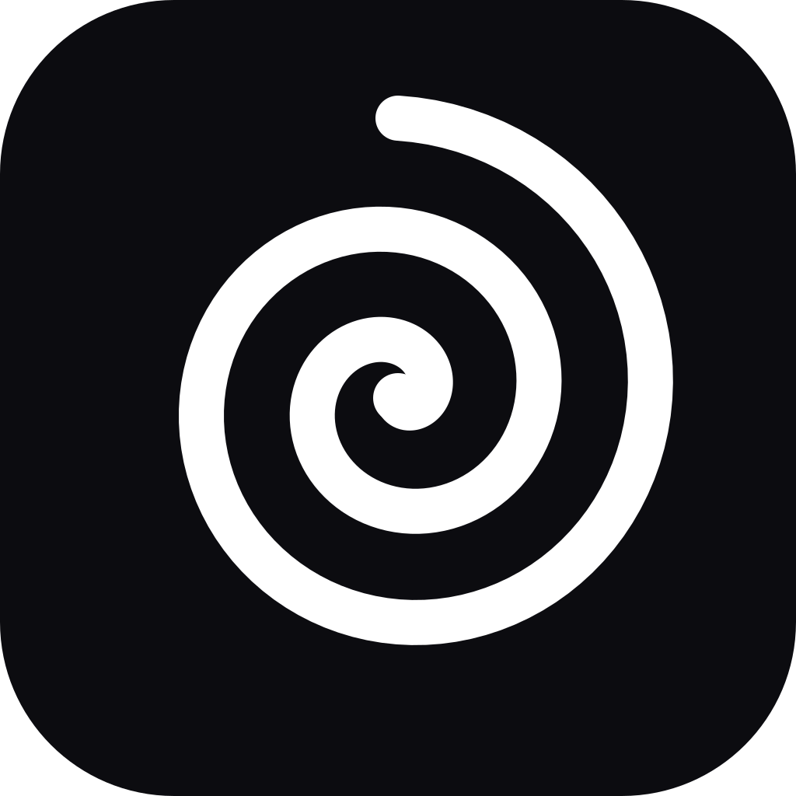
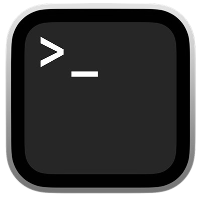
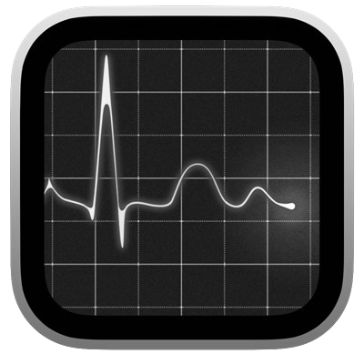
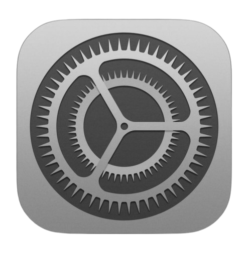

General
Indetectabilidad
Cuando está activo, Echo es invisible a la compartición / grabación de pantalla.
Abrir al iniciar sesión
Abre Echo automáticamente al iniciar sesión.
Disfraz (al compartir pantalla)
Nombre e icono que Echo muestra en el dock / Monitor de Actividad.

Echo
Terminal
Activity
SettingsIdioma
Idioma de transcripción
El idioma que hablas en las reuniones.
Idioma de respuesta
Idioma preferido para las respuestas de Echo.
Audio
Transcripción en vivo (Deepgram)
Micrófono + audio del sistema vía el dispositivo agregado "OpenCluely In", transcrito por Deepgram. Apágalo para dejar de escuchar.
API key de Deepgram
Necesaria para la transcripción. Se guarda en
~/.Echo/.env. Separación de ventanas
Separación entre ventanas acopladas (píxeles).
Obsidian
Guardar reuniones automáticamente
Al detener una grabación, guarda una nota diarizada + resumen de Hermes en tu vault (Echo/Reuniones).
Calendario
Conecta Google Calendar para que Echo (vía Hermes) vea tus reuniones y recordatorios.
Google Calendar
Sin conectar
Configuración única: crea un OAuth Client (Desktop) en
console.cloud.google.com/apis/credentials,
descarga
client_secret.json y guárdalo en
~/.hermes/google_client_secret.json. Luego pulsa Conectar.
Atajos de teclado
Haz clic en un atajo y pulsa la nueva combinación. Esc cancela.
Perfil
E
Usuario de Echo
—
Cuenta conectada
Ninguna cuenta de Google conectada
Acerca de
Echo
Asistente personal con contexto · cerebro: Hermes
Cerebro
OpenAI gpt-4o (visión) vía Hermes · respaldo Copilot